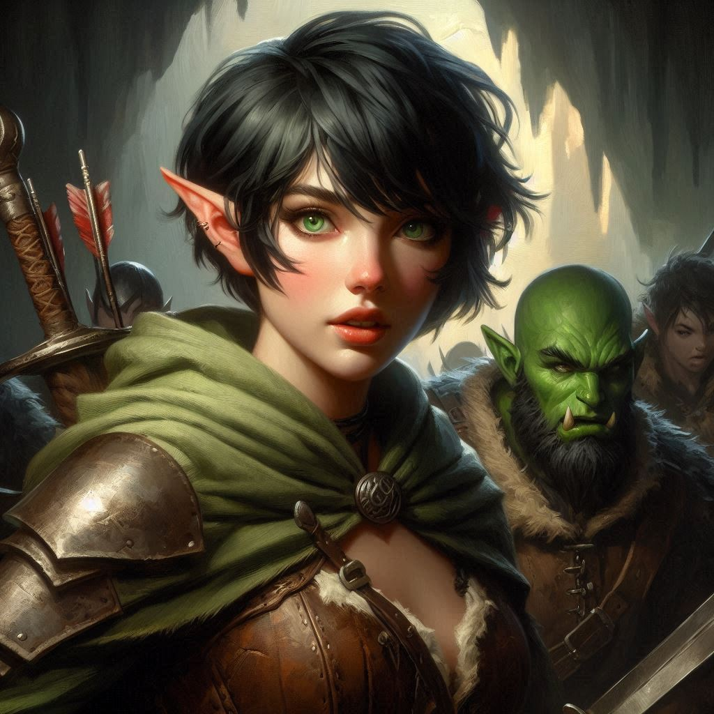
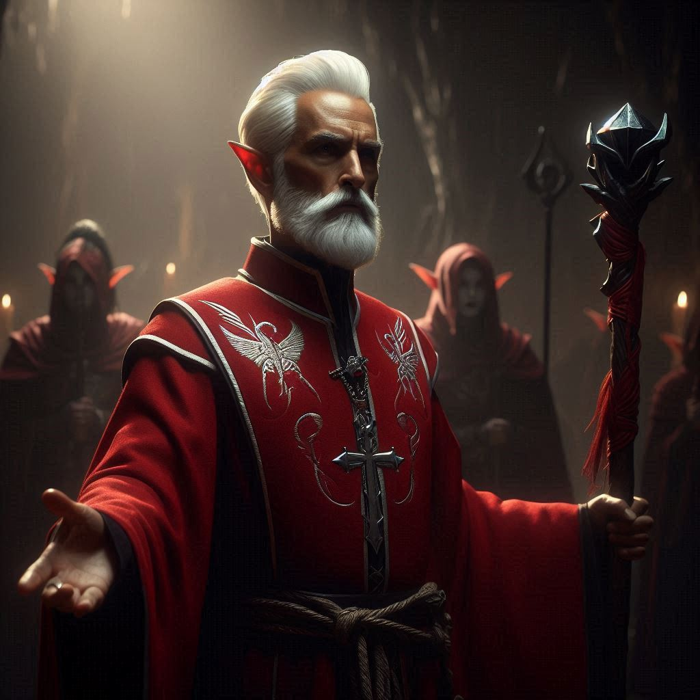

The Dark Alliance
Exhausted, you press on toward Hemlock Caverns, the air growing colder and more oppressive with every step. The thunderous echo of Hemlock Falls grows louder with each passing minute. Soon, you find yourself at the entrance to a cavern, almost hidden by the dense trees and underbrush. The sides of the cavern are flanked with large stone statues of what appear to be warriors of elvish descent.
“This is it,” Baider says.
You pull a torch from your pack and strike your flint and steel. The torch flickers to life and the two of you enter the cave without any further words.
Baider walks beside you, his face grim, the weight of old secrets hanging between you. You try not to think about what Jorsh showed you in the dream, the promise of a power that could change everything. Could he be right? Could the evil he seeks to control be less dangerous than the corrupt forces already pulling the strings?
Your thoughts are interrupted as the tunnel opens into a vast, shadowy chamber. The low hum of ancient magic fills the air, and ahead, a group of dark elves stands waiting. They are imposing figures, their gray skin almost blending with the cavern walls, eyes glowing faintly in the dim light.
The leader steps forward, her violet eyes locking onto yours with cold disdain. “You should not have come here,” she says, her voice like ice. “The power you seek belongs to us. You’re as much of a fool as the others who think they can claim it.”
You tense at her words, exchanging a quick glance with Baider. Something is off. These elves aren’t just guarding the magic—they’re tied to something more sinister. You feel it in the way they carry themselves, the way they watch you with a mixture of disdain and suspicion.
“The Minister of Trade,” Baider growls, his voice low but sharp. “He’s behind this, isn’t he?”
The elf leader’s eyes narrow, but she doesn’t respond. You step forward, forcing yourself to stand tall despite the knot of anxiety forming in your gut. “The Minister of Trade has been manipulating you, hasn’t he? Promising you power, protection—whatever it is you think you’ll gain from this alliance. But he’s using you. Just like he’s using Jorsh.”
The elf leader’s lips curl into a sneer. “Using us?” She steps closer, her presence towering over you. “The Minister of Trade is one of us, bastard human. He seeks to restore the balance that your kind destroyed.”
Baider’s hand tightens on his hammer, his eyes flashing with a mix of anger and realization. “So it’s true,” he mutters, more to himself than to you. “The Minister… he’s been hiding in plain sight. A dark elf all along.”
Your heart skips a beat. The Minister of Trade, the man pulling strings across the realm, is a dark elf? It makes too much sense now. His obsession with the caverns, his desire for control, his manipulation of Jorsh—it all fits. But this revelation makes Jorsh’s quest for power more… understandable. The Minister is playing a dangerous game, and Jorsh might be the only one capable of stopping him.
“Don’t you see?” the elf leader continues, her voice growing harsher. “We are reclaiming what was ours before your kingdoms took it from us. The Minister of Trade will restore our people’s glory. And you—” she glares at you, “—you will not stand in our way.”
The elves begin to fan out, surrounding you and Baider. You grip the hilt of your sword, feeling your pulse quicken. Baider steps in front of you, his stance wide, protective.
“There’s no reasoning with them,” he mutters. “They’re too far gone.”
You nod, heart pounding in your chest. You feel the weight of the map hidden in your pack—it’s what they’re after, what everyone is after. If they get it, if the Minister gets it, everything is lost.
The elf leader raises her hand, and the cavern trembles. Dark magic surges through the ground, snaking toward you like living tendrils. “Take them!” she commands.
The fight explodes before you can even draw breath.
Baider lets out a roar, his hammer flashing through the air as he charges the nearest elf. You’re right behind him, blade slicing through the dark tendrils that shoot toward you. The elves are fast—faster than you expected—and their magic hisses with deadly precision.
One leaps toward you, and you barely parry his strike, the force of the blow sending a shock through your arms. You spin, ducking another attack, your sword slashing in a wide arc that catches him off guard. He stumbles back, but not for long. These elves are not easily deterred.
You catch sight of Baider in the middle of the fray, his hammer smashing through one elf while another latches onto his back, trying to drag him down. He shakes them off with a growl, swinging his weapon in a deadly arc.
But then you see him. The Minister of Trade—no, the dark elf who has masqueraded as the Minister of Trade—emerges from the shadows of the cavern. His eyes gleam with malice, and the air around him pulses with dark energy.
He raises a hand, and you feel the surge of his magic slam into you, knocking you off your feet. The world spins as you hit the ground, the map slipping from your pack.
“No!” you shout, scrambling to your feet just as the Minister steps toward the fallen parchment.
But before he can claim it, Baider charges him, roaring with fury. His hammer crashes down, but the Minister moves faster than you thought possible, deflecting the blow with a wave of his hand. The force sends Baider flying back, slamming into the cavern wall.
You rush to Baider’s side, helping him up, your heart racing. “We can’t beat him,” you gasp. “Not like this.”
The Minister laughs, his voice dripping with cruel amusement. “You think you can stand against me? I control this power. The caverns, the elves—everything bends to my will.”
For a moment, you hesitate. Is he right? The dark elves, the Minister, even Jorsh—they’re all after the same thing: control of this ancient power. Maybe Jorsh was right. Maybe the only way to stop the Minister is to join forces with him.